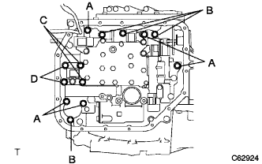
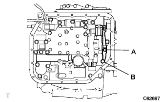
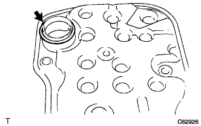
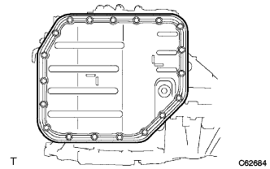

Transmission Valve Body ASSY (U340E) Installation |
| 1. Transmission Valve Body ASSY installation |
|  |
Tighten 13 bolts evenly and attach the transmission valve body ASSY to the automatic transxle.
| bolt | Length (mm) |
|---|---|
| A | 32 |
| B | twenty two |
| C | 55 |
| D | 45 |
|  |
Combine the manual valver to the center of the roler part of the manual dent spring with two bolts to tighten the manual dent spring and cover.
| bolt | Length (mm) |
|---|---|
| A | 14 |
| B | 45 |
Attach each solenoid connector.
 |
Attach the oil temperature sensor with bolts and lock plates.
| 2. Valve body oil strainer Assy mounting |
|  |
Apply an auto fluid type T-IV to the new O-ring and attach it to an oil strainer.
 |
Attach the oil strainer with three bolts.
| 3. Transxal oil bread gasket (ATM) Installation |
Attach a new oil panguto to the oil pan.
| 4. Automatic transformer axle oil bread SUB-ASSY (ATM) Installation |
 |
Attach the two oil cleaner magnet to the position of the figure.
|  |
Attach the oil pan with 19 bolts.
| 5. Automatic Transxle ASSY installation |
reference)| 6. Tascan-at learning value Initialization |
Use SST (TASCAN) to perform the operation according to the screen display, select [Work Support] in the main menu, and select Trans Mission in the work support category.
Select [AT learning value initialization] on the screen display and initialize the AT learning value.